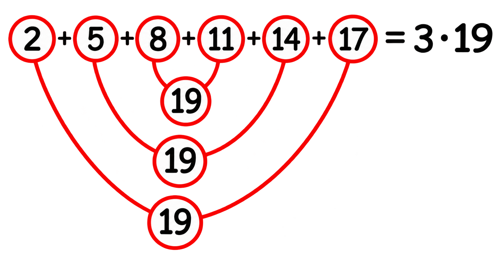

Sammendrag:
Følge (tallfølge): En ordnet liste med tall, som ofte representerer noe praktisk, f.eks. antall bokser i hver stabel ovenfor:
\[ 1, 3, 6, 10, 15, \ldots \]Element: Verdiene i en følge.
I følgen over er første element \(a_1 = 1\), andre element \(a_2 = 3\), osv.
Rekursiv formel: Formel hvor vi bruker det foregående leddet.
I følgen over er hvert ledd det foregående pluss leddnr.,
\[ a_n = a_{n-1} + n \]Vi sjekker at formelen er riktig for ledd nr. 2, 3 og 4:
\[ \begin{aligned} a_2 &= a_{2-1} + 2 = a_1 + 2 = 1 + 2 = 3 \\ a_3 &= a_{3-1} + 3 = a_2 + 3 = 3 + 3 = 6 \\ a_4 &= a_{4-1} + 4 = a_3 + 4 = 6 + 4 = 10 \end{aligned} \]Eksplisitt formel: Formel hvor vi ikke bruker det foregående leddet.
I følgen over er hvert ledd gitt ved
\[ a_n = \frac{n\cdot(n+1)}{2} \]Vi kan se at formelen er riktig for de tre første leddene:
\[ \begin{aligned} a_1 &= \frac{1\cdot(1+1)}{2} = \frac{2}{2} = 1 \\ a_2 &= \frac{2\cdot(2+1)}{2} = \frac{6}{2} = 3 \\ a_3 &= \frac{3\cdot(3+1)}{2} = \frac{12}{2} = 6 \end{aligned} \]Rekke: Summen av en følge. Vi bruker summasjonstegnet:
\[ S_n = \sum_{i=1}^{n} a_i = a_1 + a_2 + a_3 + \cdots + a_n \]Python-program for å bestemme summen av en følge: Programmet nedenfor skriver ut leddnummeret (n), verdien til hvert ledd (a) og summen (S) av de \(n\) første leddene til rekka over:
a = 0 # Startverdi a S = 0 # Startverdi for summen N = 10 # Antall ledd for n in range(1, N+1): a = a + n # Den rekursive sammenhengen S = S + a # Summen øker print(n, a, S)
Et partall \(n\) kan skrives som \(n\) = \(2k\), hvor \(k\) er et heltall.
Et oddetall \(n\) kan skrives som \(n\) = \(2k + 1\), hvor \(k\) er et heltall.
Påstand: Hvis \(n\) er et partall, så er \(n^2\) et partall.
Q.E.D.
Beviset ovenfor er et direkte bevis.
I et kontrapositivt bevis bruker vi at
\[ A \Rightarrow B \quad \text{er ekvivalent med} \quad \text{ikke }B \Rightarrow \text{ikke }A \]Påstand: Hvis \(n^2\) er et partall, så er \(n\) et partall.
Det er vanskelig å bevis dette direkte. Vi bruker derfor et kontrapositivt bevis:
Hvis \(n\) ikke er et partall, så er det et oddetall:
\[ n^2 = (2k+1)^2 = 4k^2 + 4k + 1 = 2\cdot(2k^2+2k)+1 = \text{oddetall} \]Dermed har vi bevist at
\[ \begin{aligned} n \text{ er ikke partall} &\Rightarrow n^2 \text{ er ikke partall} \\ n^2 \text{ er partall} &\Rightarrow n \text{ er partall} \\ \end{aligned} \]Q.E.D.
Vi vil ofte bevise formelen for rekker. For å være ganske sikker på at en formel er riktig, kan vi sjekke den for mange ledd, men vi kan ikke være helt sikre på at formelen er gyldig for uendelig mange ledd.
Summen av de \(n\) første partallene er gitt ved
\[ 2 + 4 + 6 + \cdots + 2n = n^2 + n \]Vi kan undersøke om formelen ser ut til å være riktig:
\[ \begin{aligned} &\text{Når } n = 1:\quad 2 = 1^2 + 1 = 1 \\ &\text{Når } n = 2:\quad 2 + 4 = 2^2 + 2 = 6 \\ &\text{Når } n = 3:\quad 2 + 4 + 6 = 3^2 + 3 = 12 \\ &\text{Når } n = 4:\quad 2 + 4 + 6 + 8 = 4^2 + 4 = 20 \end{aligned} \]Formelen ser ut til å være riktig, men vi kan ikke være helt sikre!
Vi beviser formelen i forrige eksempel:
Steg 1 viser at \(S_1\) er riktig. Steg 2 viser at formelen er riktig for \(S_n\) når den er riktig for \(S_{n-1}\). Dermed er formelen riktig for alle verdier av \(n\).
Q.E.D.
Påstand: For den rekursive følgen med \(a_1 = 1\) og \(a_n = a_{n-1} + n\), så er ledd nummer \(n\) gitt ved
\[ a_n = \frac{n(n+1)}{2} \]Steg 1 viser at \(a_1\) er riktig. Steg 2 viser at formelen for \(a_n\) er riktig hvis \(a_{n-1}\) er riktig. Dermed er formelen riktig for alle verdier av \(n\).
Q.E.D.
I en aritmetisk følge er det en fast differanse \(d\) mellom hvert element.
\[ a_n = a_{n-1} + d \]Summen av de \(n\) første leddene i en aritmetisk rekke er gitt ved
\[ S_n = \frac{n\cdot(a_1+a_n)}{2} \]Bestem summen 2 + 5 + 8 + 11 + 14 + 17.
Vi kan bestemme summen direkte; 2 + 5 + 8 + 11 + 14 + 17 = 57, eller med formelen for sum:
\[ S_6 = \frac{6\cdot(2+17)}{2} = \frac{6\cdot 19}{2} = 3\cdot 19 = 57 \]Vi kan ganske enkelt forstå summe-formelen for en aritmetisk rekke ved hjelp av illustrasjonen nedenfor:

I en geometrisk følge er det et fast forhold (kvotient) \(k\) mellom et element og det foregående elementet.
\[ a_n = a_{n-1}\cdot k \]Summen av de \(n\) første leddene i en geometrisk rekke er gitt ved
\[ S_n = a_1\cdot \frac{k^n-1}{k-1} \]Bestem summen 2 + 6 + 18 + 54.
Vi kan bestemme summen direkte; 2 + 6 + 18 + 54 = 80, eller med formelen for sum:
\[ S_4 = 2\cdot \frac{3^4-1}{3-1} = 2\cdot \frac{80}{2} = 80 \]Vi sier at en rekke er konvergent dersom summen av uendelig mange ledd i rekka går (konvergerer) mot et bestemt tall. Hvis ikke rekka konvergerer, sier vi at den divergerer.
Hva er den uendelige summen \(1 + \frac{1}{2} + \frac{1}{4} + \frac{1}{8} + \cdots\)?
Vi kan tenke oss en maur som står 2,0 meter unna en vegg, og som først går 1 meter mot veggen, deretter 1/2 meter, deretter 1/4 meter, osv. Han går da hele tiden halvveis fram til 2 meter totalt, men kommer aldri helt fram.
Rekka konvergerer mot 2.
En geometrisk rekke er konvergent dersom
\[ -1 < k < 1 \]og summen er da
\[ S = a_1\cdot \frac{k^{\infty}-1}{k-1} = \frac{a_1}{1-k} \]Hva er den uendelige summen \(1 + \frac{1}{2} + \frac{1}{4} + \frac{1}{8} + \cdots\)?
Konvergensområdet til en rekke er \(x\)-verdiene som gjør at rekka konvergerer.
Bestem konvergensområdet til rekka:
\[ 3 + 12x + 48x^2 + \cdots \]Løs likningen \(3 + 12x + 48x^2 + \cdots = 1\).
Men konvergensområdet er
\(-\frac{1}{4} < x < \frac{1}{4}\),
så likningen har
ingen løsning.
Summen blir altså ikke 1 for noen verdi av \(x\).
For hvilke verdier av \(b\) har likningen \(S(x) = b\) løsninger?
Spørsmålet er egentlig: Hvilke verdier kan summen \(S(x)\) ha?
Vi kan skrive rekka som
\[ 3\cdot\left(1 + 4x + (4x)^2 + \cdots\right) = 3\cdot\left(1+k+k^2+\cdots\right) \]Summen er da
\[ S = \frac{3}{1-k} \quad \text{hvor} \quad -1 < k < 1 \]Grensene \(k \rightarrow \pm 1\) gir at \(b \in \left\langle \frac{3}{2}, \rightarrow \right\rangle\).
Ole setter hver måned inn 1000 kr på en sparekonto med en månedlig rentefot på 0,5 %.
Hvor mye står på kontoen etter 10 måneder?
Beløpet fra første måned har vokst til \(1000\cdot 1{,}005^{10}\).
Beløpet fra andre måned har vokst til \(1000\cdot 1{,}005^9\).
Beløpet fra tredje måned har vokst til \(1000\cdot 1{,}005^8\).
\[ \vdots \]Beløpet fra den siste måneden er \(1000\).
Det totale beløpet er
\[ 1000\cdot 1{,}005^{10} + 1000\cdot 1{,}005^9 + \cdots + 1000\cdot 1{,}005 + 1000 \]Dette er en geometrisk rekke med summen
\[ S = a_1\cdot \frac{k^{11}-1}{k-1} = 1000\cdot \frac{1{,}005^{11}-1}{1{,}005-1} = 11\,279 \text{ kr} \]En pasient får 10 mg av en type medisin hver time. Hver time forsvinner 50 % av medisinen ut av kroppen på pasienten.
Hvor mye medisin er i kroppen etter lang tid?
Etter lang tid har pasienten 10 mg han akkurat har tatt, \(10\cdot 0{,}50\) mg han tok for én time siden, osv. Totalt blir dette
\[ 10 + 10\cdot 0{,}50 + 10\cdot 0{,}50^2+ \cdots = \frac{a_1}{1-k} = \frac{10}{1-0{,}50} = 20 \text{ mg} \]